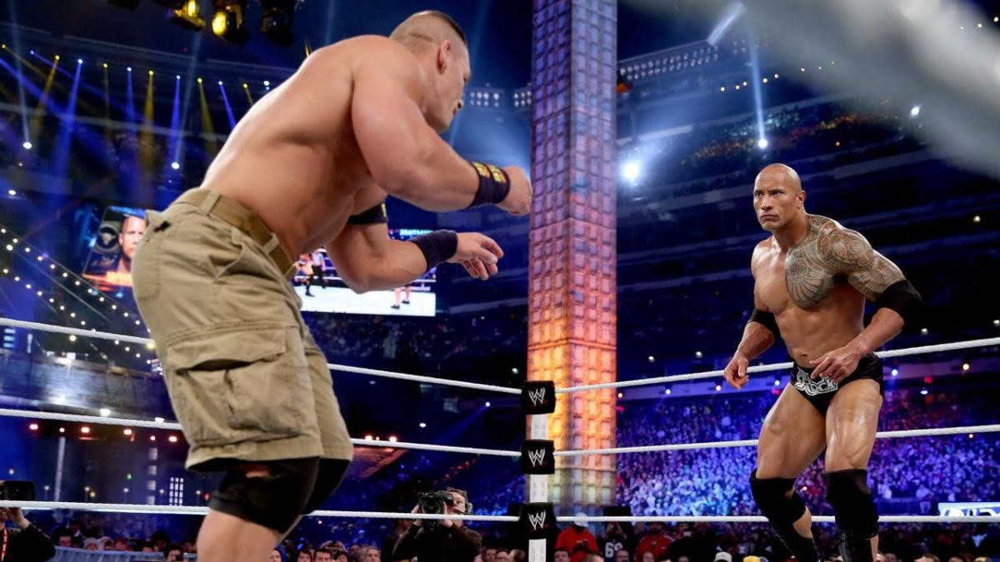

The Creation
The company we know today as WWE has underwent various rebrandings and shifts since its inception. In 1953, a territory of the Nationl Wrestling Alliance known as the Capitol Wrestling Corporation was founded. After a falling out with the NWA in 1963, the CWC detatched itself as a territory and became its own entity called the World Wide Wrestling Federation. Owner of the WWWF, Vincent J. McMahon, quietly had his company rejoin the NWA in 1971 due to booking restrictions he had faced when leaving in the first place. While in their second stint with the NWA, the WWWF dropped the "Wide" thus becoming the World Wrestling Federation. Now that the company was big enough on its own, Mr. McMahon, along side his wife and son, established Titan Sports Inc. and applied trademarks for the letters "WWF". This was the final departure from the NWA and the McMahon's at last had their own solo promotion. In 1982, Mr. McMahon's son, Vincent K. McMahon, took control of his father's company leading to a boom in the industry. Twenty years later in 2002, a legal dispute regarding the World Wildlife Fund ended in the WWF changing the name of the company to World Wrestling Entertainment, the same name it goes by today.
WrestleMania Runs Wild
WrestleMania was the WWE's first ever Pay-Per-View and is also the longest running event in the history of professional wrestling. This event was created by former executive chairman of the WWE Vincent K. McMahon and was named by legendary ring announcer Howard Finkel. WrestleMania was introduced in 1985 and has been broadcasted every year since, making it the most successful event in pro wrestling history. This event single handedly changed how wrestling was viewed by combining top wrestling talents with celebrities such as Muhammad Ali, Donald Trump, Mike Tyson, and Snoop Dogg just to name a few. WrestleMania is a special event for people across the globe to come together and celebrate their love for pro wrestling. This love can be shown in numbers as WrestleMania III held the record for highest attended indoor sports event in the world with 93,173 fans in attendance. This record was broken by the 2010 NBA All-Star game and then reclaimed by WWE in 2016 as 101,763 fans gathered in attendance for WrestleMania XXXII at Cowboys Stadium. Whether you are a die hard wrestling fan or someone who has never seen it, WrestleMania is an event where every person is bound to have an incredible experience.
Modern Day
The WWE of today is the largest professional wrestling promotion in the world. It is made up of three brands: Raw, which airs live on Monday nights, Smackdown, which airs live on Friday nights, and a developmental brand known as NXT, which airs live on Tuesday nights. WWE programming dominates on a global scale due to their accessability and the fact that their shows can be viewed in thirty different languages. In April of 2023, WWE scaled up to an even larger level. World Wrestling Entertainment reached an agreement with Endeavor Group Holdings that would merge with Zuffa, the parent company of the Ultimate Fighting Championship, to form TKO Group Holdings. This combines the two most valuable combat sports promotions in the world under one ownership. Under TKO, with no McMahon in the picture due to a sex trafficing scandal which forced him to step down, the WWE has turned a new corner which looks like they will continue to domiante the world of professional wrestling just like they have for many years.
